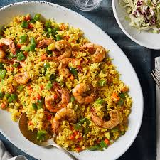

Fried Rice

Nigerian fried rice is a flavorful dish made with stir-fried rice,
vegetables, and protein, often served at parties and special occasions.
It has a distinct taste from curry powder and liver or shrimp.
Ingredients:
- 2 cups parboiled rice
- 1 cup chicken stock
- 1/2 cup cooked liver or shrimp (optional)
- 1/2 green peas
- 1/2 cup diced carrots
- 1/2 cup diced bell peppers
- 1/4 cup sweet corn
- 1/2 onion, chopped
- 2 tablespoons vegetable oil
- 1 teaspoon curry powder
- 1/2 teaspoon thyme
- 1 seasoning cube
- salt and pepper to taste
Steps:
- Cook rice in chicken stock until nearly done.
Drain and set aside.
- Heat oil in a pan, sauté onions,
and add diced liver or shrimp.
- Stir in curry powder, thyme, and seasoning cube.
- Add carrots, peas, bell peppers, and sweet corn,
and stir-fry for 2 minutes.
- Add the rice, mix well, and stir-fry
for another 5 minutes.
- Adjust seasoning and serve hot.
Back to Home